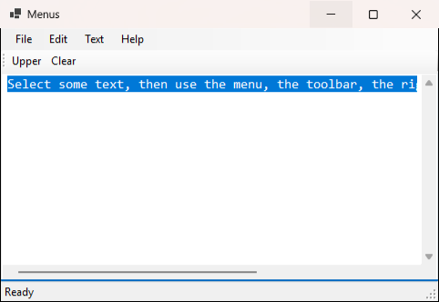

Menus, toolbars and shortcuts
One action, many ways to reach it. This lesson writes each action once and connects it to a menu item, a toolbar button, a context menu and a keyboard shortcut.
What you will learn#
- the menu bar, toolbar, context menu and status bar controls,
- shortcut keys,
- a menu item that can be ticked,
- the rule that keeps a program tidy: write each action once.
The principle#
A user may reach "make upper case" from the Text menu, a toolbar button, the right-click menu, or Ctrl+U. If each of those had its own code, a fix would have to be made four times. Instead each action is one function (upperCase, newText), and every control only calls it.
The program#
# menus, toolbars, context menus and shortcuts - one action, several ways to reach it
load "dotnet.ring"
using {
"System.Drawing"
"System.Windows.Forms"
}
oForm = ""
oText = ""
oStatus = ""
oWrapItem = ""
nActions = 0
func main
oForm = uiForm("Menus",480,300)
# The text area first (it fills the window: see the tutorial "A small text editor")
oText = uiMemo(oForm,0,0,480,260)
oText {
Dock = "Fill"
Font = new Font("Consolas",11)
Text = "Select some text, then use the menu, the toolbar, the right mouse button or a shortcut key."
}
# 1. A toolbar: buttons for the same actions. Controls docked at the top are placed in the reverse order of adding:
# the toolbar is added BEFORE the menu bar, so that the menu bar ends up above it.
oTools = new ToolStrip()
for aTool in [["Upper","upperCase()"],["Clear","newText()"]]
oButton = new ToolStripButton()
oButton.Text = aTool[1]
oButton.setClickEvent(aTool[2])
oTools.Items.Add(oButton)
next
oForm.Controls.Add(oTools)
# 2. A menu bar. uiMenu takes [title, [ [item, code, shortcut], ... ]] ; "-" is a separator.
# A shortcut is written as the .NET text of the Keys enum: "Control, A"
uiMenu(oForm,[
["File",[["New","newText()","Control, N"],["-",""],["Exit","oForm.Close()","Alt, F4"]]],
["Edit",[["Cut","oText.Cut()","Control, X"],["Copy","oText.Copy()","Control, C"],["Paste","oText.Paste()","Control, V"],["-",""],["Select all","oText.SelectAll()","Control, A"]]],
["Text",[["Upper case","upperCase()","Control, U"],["Clear","newText()"]]],
["Help",[["About","uiMessage('Menus tutorial','About')"]]]
])
# 3. A menu item that can be ticked: a ToolStripMenuItem with CheckOnClick. Added to the "Text" menu by hand.
oWrapItem = new ToolStripMenuItem().@New([ :text = "Word wrap" ])
oWrapItem.CheckOnClick = True
oWrapItem.Checked = True
oWrapItem.setCheckedChangedEvent("wrapChanged()")
oForm.MainMenuStrip.Items.Item(2).DropDownItems.Add(oWrapItem)
# 4. A context menu: opens with the right mouse button on the text
oContext = new ContextMenuStrip()
for aItem in [["Select all","oText.SelectAll()"],["Upper case","upperCase()"],["Clear","newText()"]]
oEntry = new ToolStripMenuItem().@New([ :text = aItem[1] ])
oEntry.setClickEvent(aItem[2])
oContext.Items.Add(oEntry)
next
oText.ContextMenuStrip = oContext
# 5. A status bar tells what happened
oStatus = new StatusStrip()
oStatusLabel = new ToolStripStatusLabel()
oStatusLabel.Text = "Ready"
oStatus.Items.Add(oStatusLabel)
oForm.Controls.Add(oStatus)
uiRun(oForm)
# ---------------------------------------------------------------- the actions: written once, reached from many places
func say cMessage
nActions++
oStatus.Items.Item(0).Text = cMessage
func upperCase
if oText.SelectionLength > 0
oText.SelectedText = upper(oText.SelectedText)
say("Upper case applied to the selection")
else
oText.Text = upper(oText.Text)
say("Upper case applied to all the text")
ok
func newText
oText.Text = ""
say("Cleared")
func wrapChanged
oText.WordWrap = oWrapItem.Checked
say("Word wrap is " + iif(oWrapItem.Checked,"on","off"))
func iif lCondition, xYes, xNo
if lCondition
return xYes
ok
return xNo
How it works#
The menu bar#
uiMenu builds the bar from a list: [title, [ [item, code, shortcut], ... ]]. The code is the Ring code to run (a function call), "-" is a separator, and the optional shortcut is the .NET text of the Keys enum: "Control, N", "Control, A", "Alt, F4". The shortcut also appears next to the item in the menu, and works even when the menu is closed.
A tick in the menu#
Word wrap is a ToolStripMenuItem created by hand with CheckOnClick = True: each click toggles Checked and raises CheckedChanged. The handler copies the state to the text box (oText.WordWrap = oWrapItem.Checked). It is added to the Text menu through oForm.MainMenuStrip.Items.Item(2).DropDownItems.Add(...).
The toolbar#
A ToolStrip holds buttons (ToolStripButton); each has a Text and a click event. Items.Add puts a button on the strip. The toolbar is built in a loop from a list of [caption, code].
The context menu#
A ContextMenuStrip is a menu without a bar: assign it to a control (oText.ContextMenuStrip = oContext) and it opens with the right mouse button.
The order of docked controls#
Windows Forms places docked controls starting from the last added. The text area (Dock = "Fill") is added first, then the toolbar, then the menu bar, then the status bar. The menu bar ends up at the very top, the toolbar below it, the status bar at the bottom, and the text area gets what is left. If you add the menu before the toolbar, the toolbar is placed above the menu. See the tutorial A small text editor.
Telling the user what happened#
Every action calls say(message), which writes into the status bar and counts the calls. The test uses the counter: three actions from three different places, three reports.
The checks of this program are in a separate file, selftest/ch10_menus.ring:
# the checks of ch10_menus.ring: run with ring ch10_menus.ring --selftest (the program loads this file and runs selfTest() once its window is shown)
func selfTest
# the same action from the menu, the toolbar and the context menu
oText.Text = "hello menus"
oForm.MainMenuStrip.Items.Item(2).DropDownItems.Item(0).PerformClick() # Text > Upper case
dnAssert("the menu item ran the action",oText.Text,"HELLO MENUS")
oText.Text = "second"
oForm.Controls.Item(1).Items.Item(0).PerformClick() # the toolbar (the 2nd control added): button "Upper"
dnAssert("the toolbar button ran the same action",oText.Text,"SECOND")
oText.Text = "third"
oText.ContextMenuStrip.Items.Item(1).PerformClick() # the context menu "Upper case"
dnAssert("the context menu too",oText.Text,"THIRD")
dnAssert("three actions were reported",nActions,3)
# the ticked item
oWrapItem.Checked = False
dnAssert("word wrap off",oText.WordWrap,False)
dnAssert("and the status says so",oStatus.Items.Item(0).Text,"Word wrap is off")
# the shortcut keys are properties of the items
dnAssert("a shortcut key (a combination of flags: C and Control)",oForm.MainMenuStrip.Items.Item(1).DropDownItems.Item(1).ShortcutKeys,"C, Control")Testing#
PerformClick() runs a menu item, a toolbar button or a context menu entry as if it were clicked. The test reaches each one through the control collections (Items.Item(n)) and checks that the same function ran: the text was turned to upper case in all three cases. It also toggles the tick and checks word wrap and the status text, and reads the ShortcutKeys property of Copy: C, Control (a combination of two flags, written in this order by .NET).
What you learned#
- write each action once,
- menu items, toolbar buttons, context menus all call it,
- shortcuts are enum texts,
CheckOnClickfor ticks,- docking order decides the layout.
Exercises#
- Add Redo and Undo (
oText.Undo()) withCtrl+Z. - Enable or disable Cut and Copy depending on whether text is selected (
Enabled,SelectionChanged). - Add a recent-files list that grows as the user opens files.
- Add a toolbar button with an image (
oButton.Image = new Bitmap(...), the tutorial Images).